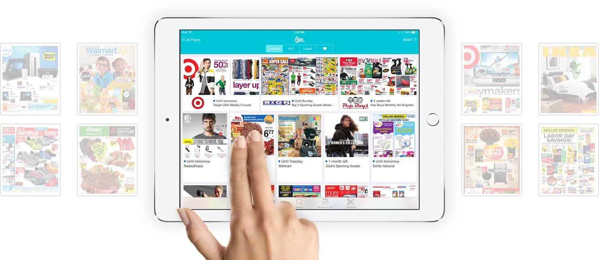

About Me: |
| I am currently a first year engineering student studying Computer Engineering at the University of Waterloo. This upcoming term (May 2016 - August 2016) I will be in my 1B term, seeking employment like many others that are also in my shoes. I also have a very wide variety of interests that include programming, hardware, physics, math, and suprisingly, biology. |
My Skills: | |
| I am quite experience in Ruby and Ruby on Rails (considering that was the main scripting language used on my last workplace), along with powerful skills in HTML, CSS, Javascript, Jquery, SQL, C, C++, Turing, Visual Basic 6, and Java. I also have quite a vast amount of experience in using Android Studio, Blender, Unity 3D, and Google Sketch up. |
Flipp Corporation: |
| My first ever Co-op job was at Flipp Corporation. It is a very rapidly growing company that has revolutionized print flyers into digital flyers. Although it is my first Co-op placement, I can confidently say without a doubt that it is by far one of the best placements I will have had the pleasure of being a part of. Not only is it filled with very amazing, young, and bright people, the culture is absolutely astounding. In addition to all of this the company took all of its employees, including the Co-ops on an all expenses paid trip to Blue Mountain for a whole weekend. They even gave us all Mac's to use, along with a free gym membership and a free TTC Metro pass. Even though the company is growing extremely quickly (hiring new people every week) it does not skew from the culture that it is best known for. In terms of the work that I did at the company, I was a consumer insights developer, where I wrote SQL queries to help the Flipp growth and marketing team to discover different trends for users. In addition to this, I fixed and coded indexers (using Watir and Ruby) that could be used to retrieve flyer content from the websites of different business. I also developed different dashboards and tools such as a flyer engagement dashboard, consumer store requests dashboard, and more (using Ruby on Rails) to be used by Flipp’s internal Operations and Analytics teams. This Co-op placement not only gave me a chance to learn many valuable technical skills, it also gave me an opportunity to meet and build lasting relationships with amazing people. |
